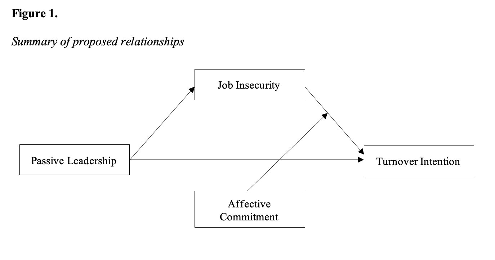
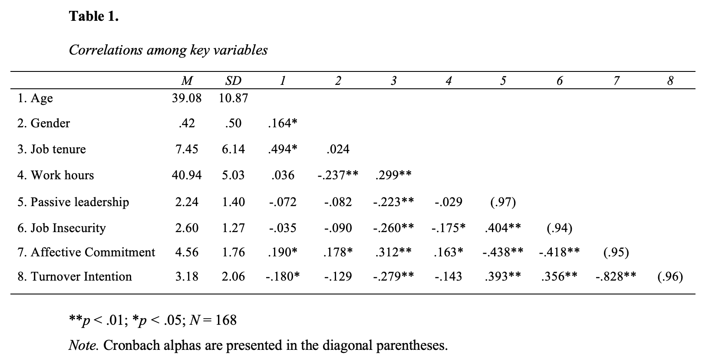
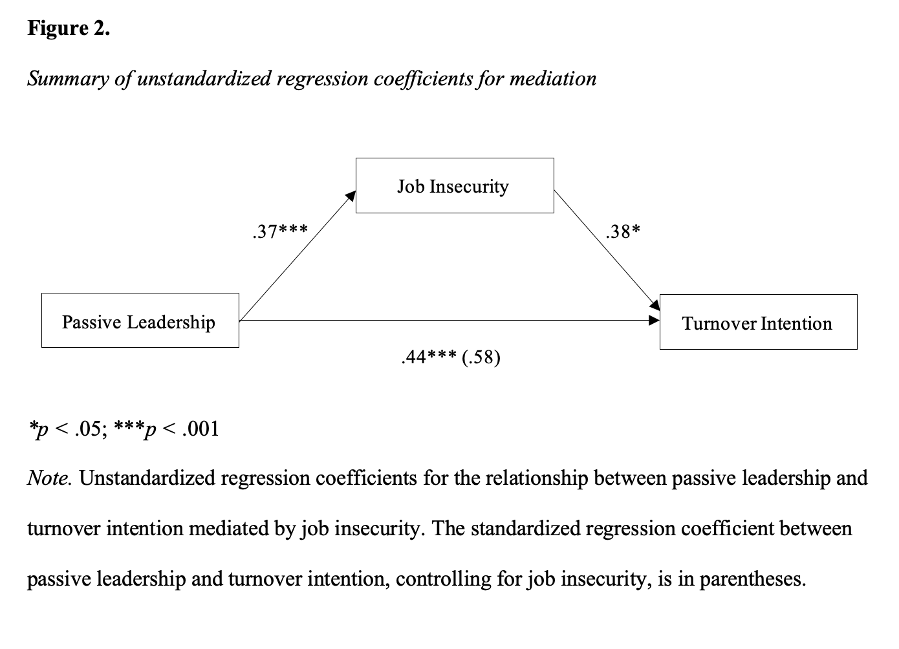

Passive leadership has been recently established as a potential reason for increased workplace stressors. Considering passive leadership as a root cause of stressors in the workplace, the current study examined job insecurity as a mediator of the relationship between passive leadership and turnover intention. Additionally, we tested if affective commitment could reduce the negative effect of job insecurity on turnover intention. Our findings suggest passive leadership positively predicted job insecurity that in turn positively predicted the intention to leave the organization. However, affective commitment did not buffer the effect of job insecurity on turnover intention. Findings of the current study contributes to a better understanding of potential antecedents of job insecurity. This study was presented at the 2021 SIOP conference.
Destructive leadership is a prevalent issue in the workplace with passive leadership being the most common (Aasland et al., 2010). Passive leadership is categorized by the disengagement and volitional inaction of a leader (DeRue et al., 2011). These leaders relinquish the responsibility of their position, provide no feedback, delay decision making, and fail to help followers satisfy their needs (Northouse, 2010). Further, passive leaders ignore problems in the workplace and neglect to clarify behavioral expectations of their employees (Harold & Holtz, 2015). At the basic level, it is a failure to carry out the functions of leadership (Barling & Frone, 2017). Even with a high frequency, passive leadership remains understudied compared to other forms of destructive leadership behaviors such as abusive supervision or unethical leadership behavior (Aasland et al., 2010; Barling & Frone, 2017).
Based on the root cause framework of poor leadership (Kelloway et al., 2005) that passive leadership can be a root cause of additional stressors, multiple studies have established that passive leadership positively predicts workplace stressors such as role ambiguity, role conflict, and role overload among subordinates (e.g., Barling & Frone, 2017; Skogsted et al., 2014). Additionally, high levels of conflict and incivility were found among subordinates with passive leaders (Harold & Holtz, 2015; Skogsted et al., 2007). Following this line of research, the current study aims to examine whether passive leadership might be related to increased job insecurity. Establishing passive leadership as a potential predictor of job insecurity is of paramount importance for two main reasons. First, there is a lack of understanding of antecedents of job insecurity (Jiang & Lavaysse, 2018). Establishing passive leadership as a predictor of job insecurity will extend the literature on antecedents of job insecurity. Second, due to the negative impact of job insecurity on employee well-being, performance, and job attitudes (Shoss, 2017), identifying passive leadership as a potential antecedent can help organizations develop strategies to reduce job insecurity. Implementing strategies to reduce job insecurity may also reduce subsequent outcomes such as turnover intention (Staufenbiel & König, 2010).
The current study also examines the indirect effect of passive leadership on turnover intentions via job insecurity. Turnover intention has and should continue to receive much attention in the literature because of its positive association with actual voluntary turnover (Lambert et al., 2001), as well as the financial and performance-related costs of employee voluntary turnover (Lee & Mitchell, 1994). Job insecurity has been established as an important predictor of turnover intention because the uncertainty of future job security is a stressful experience that may result in employees intending to leave the organization (Shoss, 2017). Based on the root cause framework of poor leadership (Kelloway et al., 2005), it is likely that passive leadership can indirectly predict increased turnover intentions via job insecurity, and the current study will empirically test this relationship.
We also explore affective commitment as a potential moderator of the relationship between job insecurity and turnover intention. Employees affectively committed to an organization wish to remain at that organization because there exists a congruency of values and goals (Meyer & Allen, 1991). When employees work towards the success of the organization, they will behave in a manner that is consistent with their own values and therefore derive benefits from this work (Meyer & Allen, 1991). Affective commitment has previously been shown to reduce the negative impact of stressors on employee performance, and it was suggested that employees high in affective commitment are likely to direct their efforts towards important work tasks and reduce resources towards extraneous activities (Hunter & Thatcher, 2007; Podsakoff et al., 2007). Extending this logic, employees high in affective commitment experiencing job insecurity may devote their efforts towards their current job role rather than ruminating or worrying about job insecurity and should have lower levels of turnover intention as a result of job insecurity.
Passive leadership is common in organizations with up to 20% of employees reporting frequent exposure to passive leadership behaviors (Aasland et al., 2010). This type of leadership is categorized within the full-range leadership theory spectrum as encompassing both inactive and ineffective behaviors (Bass, 1998). Passive leadership inactivity is mainly due to the leaders’ failure to initiate structure or define role tasks for their subordinates (DeRue et al., 2011). In addition, passive leaders are generally ineffective because when problems do not exist or are not directly apparent to the leader they do not engage with their employees (Bass, 1998).
The root cause of poor leadership framework suggests that poor leadership is a “root cause” that gives rise to other well-documented workplace stressors (Kelloway et al., 2005). Passive leadership along with abusive supervision are the two main leadership categories that have been shown to result in the proliferation of other stressors. The inability for a leader to effectively and actively engage with and provide direction for their employees leads to other stressors and subsequent unfavorable outcomes. Previous studies have found that passive leadership was positively related to workplace stressors such as role overload (Barling & Frone, 2017), role ambiguity (Skogstad et al., 2014), experienced workplace incivility (Harold & Holtz, 2015), and work-family conflict (Che et al., 2017). Additionally, subsequent unfavorable outcomes have been found to be increased burnout and negative physical symptoms (Che et al., 2017), increased behavioral incivility among subordinates (Harold & Holtz, 2015), decreased employee justice perceptions (Holtz & Hu, 2017), and increased psychological distress (Skogsted et al., 2007).
Job insecurity is defined as concerns about the permanence of one’s job position and has been described as a perceived powerlessness to act upon the possibility of job loss (Glambek et al., 2014). The construct of job insecurity lies on a continuum ranging from secure to insecure feelings about the stability of one’s job position (Shoss, 2017). Jiang and Lavaysse’s (2018) meta-analysis indicated that significant correlates of job insecurity include poor supervisor support, poor trust in management, and low levels of interpersonal justice.
Passive leaders neglect to support and fail to direct their employees (DeRue et al., 2011), and passive leadership can reflect a lack of support for their employees (Kelloway et al., 2005). Because the lack of supervisor support is an important predictor of job insecurity (Jiang & Lavaysse, 2018), it is likely that passive leadership will positively predict job insecurity. Specifically, job insecurity can be caused by feelings of unpredictability and uncontrollability (Jiang & Lavaysee, 2018). Passive leaders do not engage in traditional leadership behaviors and leave employees unable to predict their leaders’ behaviors (DeRue et al., 2011). The reduced supervisor social support from passive leaders can also increase the unpredictability and uncontrollability of an employee’s work experience. Based on these theoretical connections, the following hypothesis is proposed:
Turnover intention is the cognitive withdrawal process employees make that prefaces the final decision to leave an organization (Kim et al., 2017). Job insecurity threatens the loss of important financial and social resources. Rather than continuing to deal with the possible loss of these resources, employees may develop the cognitive withdrawal thoughts to leave the organization in search of more secure sources to fulfill their resource needs (Sverke et al., 2002). Supporting this notion, job insecurity has previously been shown to predict turnover intention (Jiang & Lavaysse, 2018; Staufenbiel & König, 2010; Sverke et al., 2002).
Based on the above proposal that passive leadership can positively predict job insecurity, as well as the established relationship between job insecurity and turnover intentions, it is likely that job insecurity can play a mediating role between passive leadership and turnover intentions. This is consistent with the root cause of poor leadership framework (Kelloway et al., 2005) that passive leadership may lead to distal strain outcomes through increased stressors. Thus, the following hypothesis is proposed:
Affective commitment is a subset of the broader concept of organizational commitment (Meyer & Allen, 1991). Affective commitment is defined as an employee’s emotional attachment to an organization characterized by acceptance of organizational values, identification with the organization, and willingness to remain at the organization (Mowday, Steers & Porter, 1982). Employees with high affective commitment work at the organization because they want to (Meyer & Allen, 1991). Common outcomes of affective commitment include intent to remain at the organization, increased job satisfaction, and decreased turnover (Clegg, 1983; Collareli et al., 1987; Somers, 1995).
We suggest that affective commitment will have a buffering effect on the relationship between job insecurity and turnover intention. Following the attention theory of stress, individuals with higher levels of affective commitment toward their organization tend to channel stress into positive work outcomes (Hunter & Thatcher, 2007). Employees high in affective commitment actively accept the values and goals of their organization and put effort towards accomplishing these goals (Mayer & Schoorman, 1992). Workers who are highly committed are more likely, when under stress, to direct their efforts towards important work tasks and to reduce resources devoted to other activities (Hunter & Thatcher, 2007).
Employees high in affective commitment experiencing job insecurity are likely to channel the stress into actively accomplishing work tasks and organizational goals, reducing distal strains. In contrast, employees low in affective commitment are more susceptible to distal strain from stressors (Podsakoff et al., 2007) and are unlikely to channel stress into positive work outcomes (Hunter & Thatcher, 2007). Without the ability to focus their attention on positive work outcomes under stress, these employees are likely to perceive the stress from job insecurity more negatively. Resources will not be directed towards important tasks but rather towards non-work-related activities such as intending to leave the organization. Therefore, the following hypothesis is proposed:
Figure 1 summarizes the proposed relationships.

We recruited our participants from Amazon.com’s Mechanical Turk. Data was collected in two waves with one month in between to reduce common method variance (Podsakoff et al., 2003). At time 1 (T1), we distributed our survey to Mechanical Turk full-time employees in North America who worked at least 30 hours per week. A total of 425 participants took the initial survey. One hundred and eighty-three participants were excluded from the final data set for the following reasons: 23 indicated that they were not in North America or failed to respond to that question, 12 did not answer any survey question, 69 failed to pass the attention check questions, 13 people’s IP addresses were not from North America, 16 did not complete the majority of the survey questions, 5 reported working fewer than 30 hours per week, and 45 indicated they would not participate in the follow-up survey. The remaining sample included 242 full-time employees at T1.
At time 2 (T2), the survey was sent to the 242 participants at T1 and 217 started the survey. Twenty-three of these participants were omitted due to not answering any survey question or failing to pass the attention check questions. We conducted our analyses with those who had both T1 and T2 data. In this final sample of 168 participants, 58% were male, 81.5% were white, working in a variety of industries (e.g., service (20.8%), finance (12.5%), education (11.3%), and manufacturing (10.7%). Their average age was 39.1 years (SD = 10.9 years) and their average tenure was 7.7 years (SD = 6.1 years).
Passive leadership, job insecurity, and participants’ demographics were measured at T1. Turnover intention and affective commitment were measured at T2. All measures used a 7-point Likert scale with response options ranging from 1 (strongly disagree) to 7 (strongly agree).
Passive Leadership. Passive leadership was assessed using a 10-item scale from Karakitapoğlu-Aygün and Gumusluoglu (2013). Participants were asked to rate the extent to which each item described their supervisors. An example item was “Avoids responsibility” (alpha = .97).
Job Insecurity. Job insecurity was assessed using 10-item scale from Oldham and colleagues (1988). An example item was “I am secure in my job” (alpha = .94).
Affective Commitment. Affective commitment was assessed using a 6-item scale from Meyer and colleagues (1993). An example item was “I would be very happy to spend the rest of my career with this organization” (alpha = .95).
Turnover Intention. Turnover intention was assessed using a 3-item scale from Cammann and colleagues (1979). An example item was “I often think of quitting” (alpha = .96).
Demographics. Demographic information was collected at Time 1, including gender, age, years of job tenure, and hours worked per week.
Table 1 shows means, standard deviations, and correlations among studied variables. To test Hypothesis 1 a simple linear regression was run. As predicted, passive leadership positively predicted job insecurity, b= .37, p < .001. Thus, Hypothesis 1 was supported.

Hypothesis 2 was tested using PROCESS v3.4 on SPSS (Hayes, 2012). Model 4 was used to test the mediation relationship. As shown in Figure 2, passive leadership significantly predicted job insecurity, b = .37, p < .001 and job insecurity significantly predicted turnover intention, b = .38, p < .05. The indirect effect of passive leadership on turnover intention was .14 with a bootstrapped 95% CI [.04, .25]. Thus, Hypothesis 2 was supported.
To test Hypothesis 3, PROCESS model 1 for moderation was used. Affective commitment did not significantly moderate the relationship between job insecurity and turnover intention because the interaction between job insecurity and affective commitment in predicting turnover intention was not significant, b= .05, p= .18. Thus, Hypothesis 3 was not supported.

The present study finds that job insecurity mediates the relationship between passive leadership and turnover intention. Affective commitment was not found to moderate the relationship between job insecurity and turnover intention. Despite the unsupported moderation hypothesis, we believe our findings can contribute to the literature in two main ways.
First, building on the root cause of poor leadership framework (Kelloway et al., 2005), we establish passive leadership as a potential cause of job insecurity. That is, when employees experience passive leadership, they are likely to develop job insecurity due to the lack of support, predictability, or controllability coming from their leader. This finding is consistent with previous literature that passive leadership is positively related to various other workplace stressors (Barling & Frone, 2017; Che et al., 2017; Harold & Holtz, 2015; Skogstad et al., 2014).
Second, we demonstrate the mediating role of job insecurity in the relationship between passive leadership and turnover intention. The experienced job insecurity subordinates develop from passive leadership may lead employees to develop intentions to leave the organization. This finding is consistent with previous findings that passive leadership may lead to distal strain through increased stressors (Che et al., 2017). Both of our contributions provide additional empirical support for the root cause of poor leadership framework (Kelloway et al., 2005).
We did not find support for the buffering role of affective commitment on the effect of job insecurity on turnover intention. This finding is not consistent with previous literature that affective commitment buffers the effects of stressors on strain outcomes (Podsakoff et al., 2007). One potential reason is that affective commitment is unable to buffer potential resource losses by job insecurity and individuals will inevitably begin the cognitive withdrawal process from the organization in search of a more stable supply of resources.
On the practice side, our findings suggest it may be beneficial to look to leadership behaviors in an organization if there is an increase in job insecurity perception or turnover intentions. Decreasing passive leadership behaviors and encouraging supervisor support for subordinates could result in decreased apprehension among employees about the security of their job position. Instead of cognitively withdrawing from the organization, employees may be more motivated to continue their membership in their organizations. ## Limitations and directions for future research
Although we used a time-lagged design, this study used self-report measures and the potential for common-method variance exists (Podsakoff et al., 2003). Second, the sample used in this study was predominantly white males, which might influence the results since minorities and protected class groups have reported more passive aggressive behavior from leadership (Hughes & Brown, 2018). Third, there may be other potential moderators and mediators that influence these relationships such as type of industry and organization (e.g., a large number of participants worked in the service industry), position held by the employee, tenure at the organization, and more.
Additionally, this study offers insight into future directions of research. First, due to data collection at two different time points, we cannot draw conclusions regarding the direction of these relationships. Future studies using similar designs to study passive leadership are needed to examine the direction of effects observed in the current study by measuring all variables across four measurement time points and conducting cross-lagged mediation analyses. Second, given a sharp increase in job insecurity during the COVID-19 pandemic (Wilson et al., 2020), future research is needed to examine these relationships in new workplace environments. Longitudinal studies tracking job insecurity, its antecedents, and outcomes during the pandemic would offer key insights into other variables that affect this relationship.
Aasland, M. S., Skogstad, A., Notelaers, G., Nielsen, M. B., & Einarsen, S. (2010). The prevalence of destructive leadership behaviour. British Journal of management, 21(2), 438-452.
Barling, J., & Frone, M. R. (2017). If only my leader would just do something! Passive leadership undermines employee well‐being through role stressors and psychological resource depletion. Stress and Health, 33(3), 211-222.
Bass, B. M. (1998). Transformational leadership: Industrial, military, and educational impact. Mahwah, NJ: Erlbaum.
Cammann, C., Fichman, M., Jenkins, D., & Klesh, J. (1979). The Michigan organizational assessment questionnaire. Unpublished manuscript, University of Michigan, Ann Arbor, 71-138.
Che, X. X., Zhou, Z. E., Kessler, S. R., & Spector, P. E. (2017). Stressors beget stressors: The effect of passive leadership on employee health through workload and work–family conflict. Work & Stress, 31(4), 338-354.
Clegg, C. W. (1983). Psychology of employee lateness, absence, and turnover: A methodological critique and an empirical study. Journal of Applied psychology, 68(1), 88.
Collarelli, S. M. (1987). Comparative effects of personal and situational influences on job outcomes of new professionals, Journal of Applied Psychology. 72: 558-566.
DeRue, D. S., Nahrgang, J. D., Wellman, N. E. D., & Humphrey, S. E. (2011). Trait and behavioral theories of leadership: An integration and meta‐analytic test of their relative validity. Personnel psychology, 64(1), 7-52.
Glambek, M., Matthiesen, S. B., Hetland, J., & Einarsen, S. (2014). Workplace bullying as an antecedent to job insecurity and intention to leave: a 6‐month prospective study. Human Resource Management Journal, 24(3), 255-268.
Harold, C. M., & Holtz, B. C. (2015). The effects of passive leadership on workplace incivility. Journal of Organizational Behavior, 36(1), 16-38.
Hayes, A. F. (2012). PROCESS: A versatile computational tool for observed variable mediation, moderation, and conditional process modeling [White paper]. Retrieved from http://www.afhayes.com/ public/process2012.pdf
Holtz, B. C., & Hu, B. (2017). Passive leadership: relationships with trust and justice perceptions. Journal of Managerial Psychology.
Hughes, C., & Brown, L. M. (2018). Exploring leaders’ discriminatory, passive-aggressive behavior toward protected class employees using diversity intelligence. Advances in Developing Human Resources, 20(3), 263-284.
Hunter, L. W., & Thatcher, S. M. (2007). Feeling the heat: Effects of stress, commitment, and job experience on job performance. Academy of Management Journal, 50(4), 953-968.
Jiang, L., & Lavaysse, L. M. (2018). Cognitive and affective job insecurity: A meta-analysis and a primary study. Journal of Management, 44(6), 2307-2342.
Karakitapoğlu-Aygün, Z., & Gumusluoglu, L. (2013). The bright and dark sides of leadership: Transformational vs. non-transformational leadership in a non-Western context. Leadership, 9(1), 107-133.
Kelloway, E. K., Sivanathan, N., Francis, L., & Barling, J. (2005). Poor leadership. Handbook of work stress, 89-112.
Kim, S., Tam, L., Kim, J. N., & Rhee, Y. (2017). Determinants of employee turnover intention. Corporate Communications: An International Journal.
Lambert, E. G., Lynne Hogan, N., & Barton, S. M. (2001). The impact of job satisfaction on turnover intent: a test of a structural measurement model using a national sample of workers. The Social Science Journal, 38(2), 233-250.
Lee, T. W., & Mitchell, T. R. (1994). An alternative approach: The unfolding model of voluntary employee turnover. Academy of management review, 19(1), 51-89.
Mayer, R. C., & Schoorman, F. D. (1992). Predicting participation and production outcomes through a two-dimensional model of organizational commitment. Academy of Management journal, 35(3), 671-684.
Meyer, J. P., & Allen, N. J. (1991). A three-component conceptualization of organizational commitment. Human resource management review, 1(1), 61-89.
Meyer, J. P., Allen, N. J., & Smith, C. A. (1993). Commitment to organizations and occupations: Extension and test of a three-component conceptualization. Journal of applied psychology, 78(4), 538.
Mowday, R. T., Porter, L. W., & Steers, R. (1982). Organizational linkages: The psychology of commitment, absenteeism, and turnover.
Northouse, P. G. (2010). Authentic leadership. Leadership theory and practice (5th ed., pp. 205-239). Los Angeles, CA: Sage.
Oldham, G. R., Kulik, C. T., Stepina, L. P., & Ambrose, M. L. (1986). Relations between situational factors and the comparative referents used by employees. Academy of Management Journal, 29(3), 599-608.
Podsakoff, N. P., LePine, J. A., & LePine, M. A. (2007). Differential challenge stressor-hindrance stressor relationships with job attitudes, turnover intentions, turnover, and withdrawal behavior: a meta-analysis. Journal of applied psychology, 92(2), 438.
Podsakoff, P. M., MacKenzie, S. B., Lee, J. Y., & Podsakoff, N. P. (2003). Common method biases in behavioral research: a critical review of the literature and recommended remedies. Journal of applied psychology, 88(5), 879.
Shoss, M. K. (2017). Job insecurity: An integrative review and agenda for future research. Journal of Management, 43(6), 1911-1939.
Skogstad, A., Einarsen, S., Torsheim, T., Aasland, M. S., & Hetland, H. (2007). The destructiveness of laissez-faire leadership behavior. Journal of occupational health psychology, 12(1), 80.
Skogstad, A., Hetland, J., Glasø, L., & Einarsen, S. (2014). Is avoidant leadership a root cause of subordinate stress? Longitudinal relationships between laissez-faire leadership and role ambiguity. Work & Stress, 28(4), 323-341.
Somers, M. J. (1995). Organizational commitment, turnover and absenteeism: An examination of direct and interaction effects. Journal of organizational Behavior, 16(1), 49-58.
Staufenbiel, T., & König, C. J. (2010). A model for the effects of job insecurity on performance, turnover intention, and absenteeism. Journal of Occupational and Organizational Psychology, 83(1), 101-117.
Sverke, M., Hellgren, J., & Näswall, K. (2002). No security: a meta-analysis and review of job insecurity and its consequences. Journal of occupational health psychology, 7(3), 242.
Wilson, J. M., Lee, J., Fitzgerald, H. N., Oosterhoff, B., Sevi, B., & Shook, N. J. (2020). Job insecurity and financial concern during the COVID-19 pandemic are associated with worse mental health. Journal of occupational and environmental medicine, 62(9), 686-691.